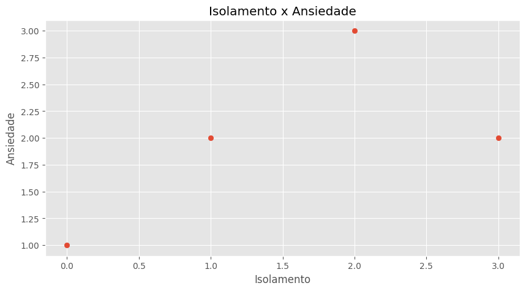
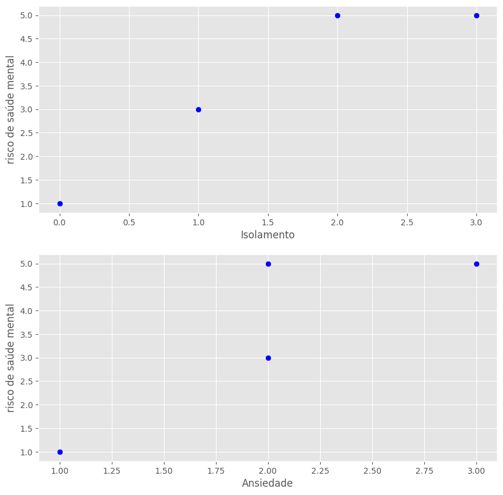
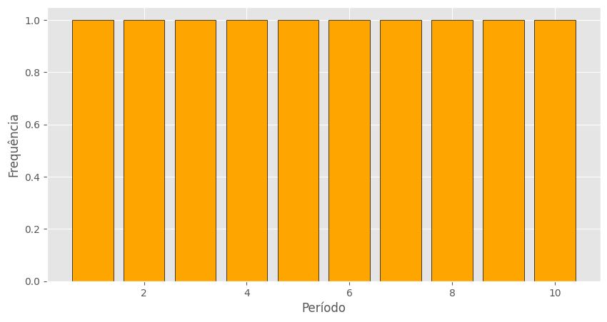
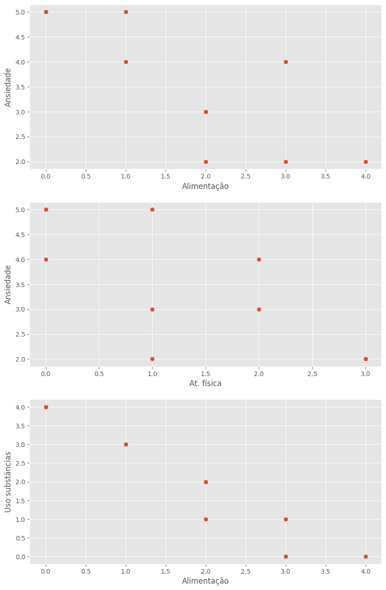

import pandas as pd
import numpy as npO que é mapeamento?
O mapeamento é um processo fundamental na área de Inteligência Artificial (IA) e Machine Learning (ML), que envolve a identificação e a representação de dados em um formato que pode ser facilmente analisado e interpretado por algoritmos.
Obs: Os dados usados nesse projeto são fictícios
# Dados antes do mapeamento
data = {
'age': [21, 19, 16, 42],
'sexo': ['não-binário', 'masculino', 'feminino', 'masculino'],
'isolamento': ['Nunca', 'Às vezes', 'Frequentemente', 'Sempre'],
'ansiedade': ['Leve', 'Moderada', 'Grave', 'Moderada']
}
df = pd.DataFrame(data)
df| age | sexo | isolamento | ansiedade | |
|---|---|---|---|---|
| 0 | 21 | não-binário | Nunca | Leve |
| 1 | 19 | masculino | Às vezes | Moderada |
| 2 | 16 | feminino | Frequentemente | Grave |
| 3 | 42 | masculino | Sempre | Moderada |
map_isolamento = {'Nunca': 0, 'Às vezes': 1, 'Frequentemente': 2, 'Sempre': 3}# Novo dataframe com mapeamento
df['isolamento'] = df['isolamento'].map(map_isolamento)df| age | sexo | isolamento | ansiedade | |
|---|---|---|---|---|
| 0 | 21 | não-binário | 0 | Leve |
| 1 | 19 | masculino | 1 | Moderada |
| 2 | 16 | feminino | 2 | Grave |
| 3 | 42 | masculino | 3 | Moderada |
One hot econding com pandas
df = pd.get_dummies(df, columns=['sexo'])
df| age | isolamento | ansiedade | sexo_feminino | sexo_masculino | sexo_não-binário | |
|---|---|---|---|---|---|---|
| 0 | 21 | 0 | Leve | False | False | True |
| 1 | 19 | 1 | Moderada | False | True | False |
| 2 | 16 | 2 | Grave | True | False | False |
| 3 | 42 | 3 | Moderada | False | True | False |
df.dtypesage int64
isolamento int64
ansiedade object
sexo_feminino bool
sexo_masculino bool
sexo_não-binário bool
dtype: object# Mapeamento da ansiedade
map_ansiedade = {'Leve': 1,
'Moderada': 2,
'Grave': 3}
df['ansiedade'] = df['ansiedade'].map(map_ansiedade)
df| age | isolamento | ansiedade | sexo_feminino | sexo_masculino | sexo_não-binário | |
|---|---|---|---|---|---|---|
| 0 | 21 | 0 | 1 | False | False | True |
| 1 | 19 | 1 | 2 | False | True | False |
| 2 | 16 | 2 | 3 | True | False | False |
| 3 | 42 | 3 | 2 | False | True | False |
# Média da ansiedade
print(f'Média de ansiedade: {df['ansiedade'].mean()}')Média de ansiedade: 2.0df['risco de saúde mental'] = df['isolamento'] + df['ansiedade']
df| age | isolamento | ansiedade | sexo_feminino | sexo_masculino | sexo_não-binário | risco de saúde mental | |
|---|---|---|---|---|---|---|---|
| 0 | 21 | 0 | 1 | False | False | True | 1 |
| 1 | 19 | 1 | 2 | False | True | False | 3 |
| 2 | 16 | 2 | 3 | True | False | False | 5 |
| 3 | 42 | 3 | 2 | False | True | False | 5 |
import matplotlib.pyplot as plt
plt.style.use('ggplot')
fig, ax = plt.subplots(figsize=(10, 5))
# Correlação entre isolamento e ansiedade
x = df['isolamento']
y = df['ansiedade']
ax.set(title='Isolamento x Ansiedade',xlabel='Isolamento', ylabel='Ansiedade')
ax.scatter(x, y);
fig, (ax0, ax1) = plt.subplots(2, 1, figsize=(10, 10))
# Correlação entre isolamento e saúde mental
ax0.scatter(df['isolamento'], df['risco de saúde mental'], c='blue')
ax0.set(xlabel='Isolamento', ylabel='risco de saúde mental')
# Correlação entre ansiedade e saúde mental
ax1.scatter(df['ansiedade'], df['risco de saúde mental'], c='blue')
ax1.set(xlabel='Ansiedade', ylabel='risco de saúde mental');
Exemplo dois
dados = {
"idade": [19, 22, 20, 25, 21, 24, 23, 20, 22, 26],
"genero": ["Mulher", "Homem", "Homem", "Mulher", "Não-binário", "Homem", "Mulher", "Prefiro não dizer", "Mulher", "Outro"],
"curso": ["Engenharia", "Psicologia", "Direito", "Medicina", "Ciência da Computação", "Administração", "Arquitetura", "Física", "História", "Design"],
"periodo": [1, 3, 5, 7, 2, 10, 6, 4, 8, 9],
"trabalha_ou_estagia": ["Sim", "Não", "Sim", "Sim", "Não", "Sim", "Não", "Não", "Sim", "Sim"],
"horas_trabalho": [20, None, 15, 30, None, 40, None, None, 25, 20],
"moradia": ["Com a família", "Sozinho(a)", "Com amigos", "Moradia estudantil", "Com a família", "Sozinho(a)", "Com a família", "Outro", "Moradia estudantil", "Com amigos"],
# Seção 2 - sentimentos (valores de 1 a 5 para facilitar)
"depressao": [3, 2, 4, 5, 3, 2, 1, 2, 3, 4],
"prazer": [2, 3, 2, 4, 3, 4, 5, 3, 2, 1],
"ansiedade": [3, 4, 5, 5, 2, 3, 2, 2, 4, 5],
"preocupacao": [3, 3, 4, 5, 2, 3, 1, 2, 3, 5],
"sono_ruim": [4, 2, 5, 5, 3, 2, 1, 3, 4, 4],
"cansaco": [4, 3, 5, 4, 3, 3, 2, 3, 4, 5],
"alimentacao_ruim": [3, 1, 4, 5, 2, 2, 1, 2, 3, 4],
"autoimagem_negativa": [4, 2, 5, 4, 3, 3, 1, 2, 3, 4],
"concentracao_ruim": [3, 2, 4, 5, 3, 2, 1, 2, 3, 4],
"agitacao": [2, 1, 4, 5, 3, 2, 1, 1, 3, 5],
"pensamentos_suicidas": ["Não", "Não", "Sim", "Sim", "Não", "Não", "Não", "Não", "Sim", "Sim"],
# Seção 3 - vida acadêmica
"impacto_academico": ["Moderado", "Pequeno", "Grande", "Muito grave", "Pequeno", "Moderado", "Nenhum", "Pequeno", "Grande", "Muito grave"],
"motivacao_estudos": [3, 2, 1, 1, 3, 2, 4, 3, 2, 1],
"faltou_aula": ["Algumas vezes", "Uma ou duas vezes", "Frequentemente", "Muito frequentemente", "Uma ou duas vezes", "Algumas vezes", "Nunca", "Nunca", "Algumas vezes", "Muito frequentemente"],
# Seção 4 - apoio
"isolamento": ["Às vezes", "Frequentemente", "Sempre", "Sempre", "Raramente", "Às vezes", "Nunca", "Às vezes", "Frequentemente", "Sempre"],
"rede_apoio": ["Tenho poucas", "Sim, tenho algumas", "Não tenho ninguém", "Tenho poucas", "Sim, tenho muitas", "Tenho poucas", "Sim, tenho muitas", "Sim, tenho algumas", "Não tenho ninguém", "Sim, tenho algumas"],
"apoio_familiar": ["Pouco", "Moderado", "Nenhum", "Pouco", "Muito", "Pouco", "Total", "Moderado", "Nenhum", "Moderado"],
"atividades_sociais": ["Sinto-me um pouco à vontade", "Não me sinto à vontade", "Não me sinto à vontade", "Sinto-me um pouco à vontade", "Sinto-me à vontade na maioria das vezes", "Sinto-me um pouco à vontade", "Sinto-me totalmente à vontade", "Sinto-me à vontade na maioria das vezes", "Não me sinto à vontade", "Sinto-me um pouco à vontade"],
# Seção 5 - hábitos
"qualidade_sono": ["Regular", "Boa", "Ruim", "Muito ruim", "Boa", "Regular", "Muito boa", "Regular", "Ruim", "Muito ruim"],
"alimentacao": ["Razoável", "Saudável", "Pouco saudável", "Muito pouco saudável", "Saudável", "Razoável", "Muito saudável", "Razoável", "Pouco saudável", "Muito pouco saudável"],
"atividade_fisica": ["1-2 vezes por semana", "3-4 vezes por semana", "Nunca ou quase nunca", "1-2 vezes por semana", "5 ou mais vezes por semana", "3-4 vezes por semana", "5 ou mais vezes por semana", "1-2 vezes por semana", "Nunca ou quase nunca", "Nunca ou quase nunca"],
"uso_substancias": ["Às vezes", "Nunca", "Frequentemente", "Muito frequentemente", "Raramente", "Às vezes", "Nunca", "Raramente", "Frequentemente", "Muito frequentemente"],
# Seção 6 - suporte
"conhece_servico_apoio": ["Sim, conheço bem", "Conheço um pouco", "Não conheço", "Não conheço", "Conheço um pouco", "Sim, conheço bem", "Sim, conheço bem", "Conheço um pouco", "Não conheço", "Não conheço"],
"saberia_procurar_ajuda": ["Sim, saberia exatamente", "Acho que sim", "Não, não saberia", "Não, não saberia", "Sim, saberia exatamente", "Acho que sim", "Sim, saberia exatamente", "Acho que sim", "Não, não saberia", "Acho que sim"],
"ja_buscou_ajuda": ["Sim, já busquei", "Sim, pensei mas não busquei", "Não, nunca pensei em buscar", "Sim, pensei mas não busquei", "Não, nunca pensei em buscar", "Sim, já busquei", "Sim, já busquei", "Sim, pensei mas não busquei", "Sim, pensei mas não busquei", "Não, nunca pensei em buscar"]
}# Criando o DataFrame
df = pd.DataFrame(dados)
pd.set_option('display.max_columns', None)
df.head()| idade | genero | curso | periodo | trabalha_ou_estagia | horas_trabalho | moradia | depressao | prazer | ansiedade | preocupacao | sono_ruim | cansaco | alimentacao_ruim | autoimagem_negativa | concentracao_ruim | agitacao | pensamentos_suicidas | impacto_academico | motivacao_estudos | faltou_aula | isolamento | rede_apoio | apoio_familiar | atividades_sociais | qualidade_sono | alimentacao | atividade_fisica | uso_substancias | conhece_servico_apoio | saberia_procurar_ajuda | ja_buscou_ajuda | |
|---|---|---|---|---|---|---|---|---|---|---|---|---|---|---|---|---|---|---|---|---|---|---|---|---|---|---|---|---|---|---|---|---|
| 0 | 19 | Mulher | Engenharia | 1 | Sim | 20.0 | Com a família | 3 | 2 | 3 | 3 | 4 | 4 | 3 | 4 | 3 | 2 | Não | Moderado | 3 | Algumas vezes | Às vezes | Tenho poucas | Pouco | Sinto-me um pouco à vontade | Regular | Razoável | 1-2 vezes por semana | Às vezes | Sim, conheço bem | Sim, saberia exatamente | Sim, já busquei |
| 1 | 22 | Homem | Psicologia | 3 | Não | NaN | Sozinho(a) | 2 | 3 | 4 | 3 | 2 | 3 | 1 | 2 | 2 | 1 | Não | Pequeno | 2 | Uma ou duas vezes | Frequentemente | Sim, tenho algumas | Moderado | Não me sinto à vontade | Boa | Saudável | 3-4 vezes por semana | Nunca | Conheço um pouco | Acho que sim | Sim, pensei mas não busquei |
| 2 | 20 | Homem | Direito | 5 | Sim | 15.0 | Com amigos | 4 | 2 | 5 | 4 | 5 | 5 | 4 | 5 | 4 | 4 | Sim | Grande | 1 | Frequentemente | Sempre | Não tenho ninguém | Nenhum | Não me sinto à vontade | Ruim | Pouco saudável | Nunca ou quase nunca | Frequentemente | Não conheço | Não, não saberia | Não, nunca pensei em buscar |
| 3 | 25 | Mulher | Medicina | 7 | Sim | 30.0 | Moradia estudantil | 5 | 4 | 5 | 5 | 5 | 4 | 5 | 4 | 5 | 5 | Sim | Muito grave | 1 | Muito frequentemente | Sempre | Tenho poucas | Pouco | Sinto-me um pouco à vontade | Muito ruim | Muito pouco saudável | 1-2 vezes por semana | Muito frequentemente | Não conheço | Não, não saberia | Sim, pensei mas não busquei |
| 4 | 21 | Não-binário | Ciência da Computação | 2 | Não | NaN | Com a família | 3 | 3 | 2 | 2 | 3 | 3 | 2 | 3 | 3 | 3 | Não | Pequeno | 3 | Uma ou duas vezes | Raramente | Sim, tenho muitas | Muito | Sinto-me à vontade na maioria das vezes | Boa | Saudável | 5 ou mais vezes por semana | Raramente | Conheço um pouco | Sim, saberia exatamente | Não, nunca pensei em buscar |
# Verificando informações
df.info()<class 'pandas.core.frame.DataFrame'>
RangeIndex: 10 entries, 0 to 9
Data columns (total 32 columns):
# Column Non-Null Count Dtype
--- ------ -------------- -----
0 idade 10 non-null int64
1 genero 10 non-null object
2 curso 10 non-null object
3 periodo 10 non-null int64
4 trabalha_ou_estagia 10 non-null object
5 horas_trabalho 6 non-null float64
6 moradia 10 non-null object
7 depressao 10 non-null int64
8 prazer 10 non-null int64
9 ansiedade 10 non-null int64
10 preocupacao 10 non-null int64
11 sono_ruim 10 non-null int64
12 cansaco 10 non-null int64
13 alimentacao_ruim 10 non-null int64
14 autoimagem_negativa 10 non-null int64
15 concentracao_ruim 10 non-null int64
16 agitacao 10 non-null int64
17 pensamentos_suicidas 10 non-null object
18 impacto_academico 10 non-null object
19 motivacao_estudos 10 non-null int64
20 faltou_aula 10 non-null object
21 isolamento 10 non-null object
22 rede_apoio 10 non-null object
23 apoio_familiar 10 non-null object
24 atividades_sociais 10 non-null object
25 qualidade_sono 10 non-null object
26 alimentacao 10 non-null object
27 atividade_fisica 10 non-null object
28 uso_substancias 10 non-null object
29 conhece_servico_apoio 10 non-null object
30 saberia_procurar_ajuda 10 non-null object
31 ja_buscou_ajuda 10 non-null object
dtypes: float64(1), int64(13), object(18)
memory usage: 2.6+ KB# Valores faltantes
df.isna().sum()idade 0
genero 0
curso 0
periodo 0
trabalha_ou_estagia 0
horas_trabalho 4
moradia 0
depressao 0
prazer 0
ansiedade 0
preocupacao 0
sono_ruim 0
cansaco 0
alimentacao_ruim 0
autoimagem_negativa 0
concentracao_ruim 0
agitacao 0
pensamentos_suicidas 0
impacto_academico 0
motivacao_estudos 0
faltou_aula 0
isolamento 0
rede_apoio 0
apoio_familiar 0
atividades_sociais 0
qualidade_sono 0
alimentacao 0
atividade_fisica 0
uso_substancias 0
conhece_servico_apoio 0
saberia_procurar_ajuda 0
ja_buscou_ajuda 0
dtype: int64df['horas_trabalho'] = df['horas_trabalho'].fillna(0)
df.isna().sum()idade 0
genero 0
curso 0
periodo 0
trabalha_ou_estagia 0
horas_trabalho 0
moradia 0
depressao 0
prazer 0
ansiedade 0
preocupacao 0
sono_ruim 0
cansaco 0
alimentacao_ruim 0
autoimagem_negativa 0
concentracao_ruim 0
agitacao 0
pensamentos_suicidas 0
impacto_academico 0
motivacao_estudos 0
faltou_aula 0
isolamento 0
rede_apoio 0
apoio_familiar 0
atividades_sociais 0
qualidade_sono 0
alimentacao 0
atividade_fisica 0
uso_substancias 0
conhece_servico_apoio 0
saberia_procurar_ajuda 0
ja_buscou_ajuda 0
dtype: int64Mapeamento de alguns valores não numéricos
map_trabalho = {'Sim': 1,
'Não': 0}
map_substancias = {'Nunca': 0,
'Raramente': 1,
'Às vezes': 2,
'Frequentemente': 3,
'Muito frequentemente': 4}
map_sono = {'Muito boa': 4,
'Boa': 3,
'Regular': 2,
'Ruim': 1,
'Muito ruim': 0}
map_alimentacao = {
'Muito pouco saudável': 0,
'Pouco saudável': 1,
'Razoável': 2,
'Saudável': 3,
'Muito saudável': 4}
map_suicidio = {'Sim': 1,
'Não': 0}
map_at_fisica = {'Nunca ou quase nunca': 0,
'1-2 vezes por semana': 1,
'3-4 vezes por semana': 2,
'5 ou mais vezes por semana':3}
df['trabalha_ou_estagia'] = df['trabalha_ou_estagia'].map(map_trabalho)
df['qualidade_sono'] = df['qualidade_sono'].map(map_sono)
df['alimentacao'] = df['alimentacao'].map(map_alimentacao)
df['uso_substancias'] = df['uso_substancias'].map(map_substancias)
df['pensamentos_suicidas'] = df['pensamentos_suicidas'].map(map_suicidio)
df['atividade_fisica'] = df['atividade_fisica'].map(map_at_fisica)1. Estatísticas descritivas
Qual a média de idade dos participantes?
Quantos participantes estão em cada período?
Qual a proporção de estudantes que trabalham ou estagiam?
# A)
media_idade = df['idade'].mean()
print(f"Idade média: {media_idade:.0f}")Idade média: 22# B)
print('Estudantes por período: ')
df['periodo'].value_counts()Estudantes por período: periodo
1 1
3 1
5 1
7 1
2 1
10 1
6 1
4 1
8 1
9 1
Name: count, dtype: int64# C)
print('Proporção dos que trabalham/estagiam: ', end=' ')
work_intern = df[df['trabalha_ou_estagia'] == 1]
proportion = (len(work_intern)/len(df))*100
print(f'{proportion:.2f}%')Proporção dos que trabalham/estagiam: 60.00%2. Filtros e segmentações
Quantos alunos com pensamentos suicidas também relataram alta frequência de ansiedade (valores 4 ou 5)?
Liste os cursos com mais estudantes que afirmaram não ter rede de apoio.
Qual a média de horas de trabalho para quem sente “grande impacto” ou “impacto muito grave” nos estudos?
# a)
em_risco = df[(df['pensamentos_suicidas'] == 1) & (df['ansiedade'] >= 4)]
print(f"Alunos em risco: {len(em_risco)}")Alunos em risco: 4# b)
sem_ninguem = df['rede_apoio'] == 'Não tenho ninguém'
# Cursos
cursos = df[sem_ninguem]['curso'].value_counts()
cursoscurso
Direito 1
História 1
Name: count, dtype: int64# c)
# Um filtro, como no exemplo abaixo, não filtra os resultados
sente_impacto = (df['impacto_academico'] == 'Grande') | (df['impacto_academico'] == 'Muito grave')
media = df[sente_impacto]['horas_trabalho'].mean()
print(f'{media} horas trabalhadas em média')22.5 horas trabalhadas em média3. Cruzamentos de dados
Existe diferença na frequência de isolamento entre homens e mulheres?
Estudantes com sono ruim ou muito ruim têm mais pensamentos suicidas?
Compare a motivação média entre alunos com e sem apoio familiar.
# a)
pd.crosstab(df['genero'], [df['isolamento']])| isolamento | Frequentemente | Nunca | Raramente | Sempre | Às vezes |
|---|---|---|---|---|---|
| genero | |||||
| Homem | 1 | 0 | 0 | 1 | 1 |
| Mulher | 1 | 1 | 0 | 1 | 1 |
| Não-binário | 0 | 0 | 1 | 0 | 0 |
| Outro | 0 | 0 | 0 | 1 | 0 |
| Prefiro não dizer | 0 | 0 | 0 | 0 | 1 |
# a)
(pd.crosstab(df['genero'], df['isolamento'], normalize='index')*100).round(2)| isolamento | Frequentemente | Nunca | Raramente | Sempre | Às vezes |
|---|---|---|---|---|---|
| genero | |||||
| Homem | 33.33 | 0.0 | 0.0 | 33.33 | 33.33 |
| Mulher | 25.00 | 25.0 | 0.0 | 25.00 | 25.00 |
| Não-binário | 0.00 | 0.0 | 100.0 | 0.00 | 0.00 |
| Outro | 0.00 | 0.0 | 0.0 | 100.00 | 0.00 |
| Prefiro não dizer | 0.00 | 0.0 | 0.0 | 0.00 | 100.00 |
# b)
sono = df[(df['qualidade_sono'] == 1) | (df['qualidade_sono'] == 0)]
pd.crosstab(sono['qualidade_sono'], df['pensamentos_suicidas'])| pensamentos_suicidas | 1 |
|---|---|
| qualidade_sono | |
| 0 | 2 |
| 1 | 2 |
# c)
apoio = df[(df['apoio_familiar'] == 'Total') | (df['apoio_familiar'] == 'Nenhum')]
pd.crosstab(apoio['apoio_familiar'], df['motivacao_estudos'])| motivacao_estudos | 1 | 2 | 4 |
|---|---|---|---|
| apoio_familiar | |||
| Nenhum | 1 | 1 | 0 |
| Total | 0 | 0 | 1 |
4. Visualizações
Faça um gráfico de barras com a quantidade de alunos por período.
Crie um boxplot comparando a qualidade do sono com os níveis de ansiedade.
Monte um heatmap de correlação (usando apenas colunas numéricas: idade, ansiedade, motivação, etc.).
# a)
fig, ax = plt.subplots(figsize=(10, 5))
data_plot = df['periodo']
ax.bar([1, 2, 3, 4, 5, 6, 7, 8, 9, 10], data_plot.value_counts(), color='orange', edgecolor='black')
ax.set(xlabel='Período', ylabel='Frequência');
# b)
import seaborn as sns
# Criar boxplots da ansiedade (ou depressao, etc.) para cada categoria de qualidade_sono (já numérica).
# Isso significa que teremos múltiplos boxplots de ansiedade, um para cada nível de sono.
# Plot the data with seabon
sns.boxplot(x='qualidade_sono', y='ansiedade', data=df);--------------------------------------------------------------------------- ModuleNotFoundError Traceback (most recent call last) Cell In[30], line 2 1 # b) ----> 2 import seaborn as sns 3 # Criar boxplots da ansiedade (ou depressao, etc.) para cada categoria de qualidade_sono (já numérica). 4 # Isso significa que teremos múltiplos boxplots de ansiedade, um para cada nível de sono. 5 6 # Plot the data with seabon 7 sns.boxplot(x='qualidade_sono', y='ansiedade', data=df); ModuleNotFoundError: No module named 'seaborn'
# c)
numerical_columns = {'idade': df['idade'],
'ansiedade': df['ansiedade'],
'alimentacao': df['alimentacao'],
'substancias': df['uso_substancias'],
'at. física': df['atividade_fisica']}
df1 = pd.DataFrame(numerical_columns)
# Matriz de correlação
mat_corr = df1.corr()
# Criando o heatmap
sns.heatmap(mat_corr, annot=True, cmap='viridis', linewidths=0.5)
plt.title('Heatmap de correlações');Vamos investigar mais a fundo correlações fortes tanto positivas quanto negativas
Alimentação x Substância
Alimentação x Ansiedade
Atividade física x Ansiedade
# Creating the figure
fig, (a, b, c) = plt.subplots(3, 1, figsize=(10, 16))
# Make the data
ax = df['alimentacao']
ay = df['ansiedade']
bx = df['atividade_fisica']
by = df['ansiedade']
cx = df['alimentacao']
cy = df['uso_substancias']
# Plot the data
a.scatter(ax, ay)
b.scatter(bx, by)
c.scatter(cx, cy)
# Setting titles and labels
a.set(xlabel='Alimentação', ylabel='Ansiedade')
b.set(xlabel='At. física', ylabel='Ansiedade')
c.set(xlabel='Alimentação', ylabel='Uso substâncias');
Talvez pela pouca quantidade de dados não foi possível observar uma correlação(linear) forte entre as variáveis supracitadas como foi mostrado no heatmap.
5. Insights e hipóteses
Qual comportamento parece mais associado à falta de motivação: má qualidade do sono, uso de substâncias ou ausência de rede de apoio?
Qual grupo apresenta maior risco: quem mora sozinho ou quem está em moradia estudantil?
# a)
moti_sono = pd.crosstab(df['qualidade_sono'], df['motivacao_estudos'])
moti_addiction = pd.crosstab(df['uso_substancias'], df['motivacao_estudos'])
moti_apoio = pd.crosstab(df['apoio_familiar'], df['motivacao_estudos'])
print(moti_sono)
print('-=-'*10)
print(moti_addiction)
print('-=-'*10)
print(moti_apoio)motivacao_estudos 1 2 3 4
qualidade_sono
0 2 0 0 0
1 1 1 0 0
2 0 1 2 0
3 0 1 1 0
4 0 0 0 1
-=--=--=--=--=--=--=--=--=--=-
motivacao_estudos 1 2 3 4
uso_substancias
0 0 1 0 1
1 0 0 2 0
2 0 1 1 0
3 1 1 0 0
4 2 0 0 0
-=--=--=--=--=--=--=--=--=--=-
motivacao_estudos 1 2 3 4
apoio_familiar
Moderado 1 1 1 0
Muito 0 0 1 0
Nenhum 1 1 0 0
Pouco 1 1 1 0
Total 0 0 0 1O fator que parece mais impactar a falta de motivação é a falta de uma rede de apoio
# b)
# Quem mora só ou em moradia estudantil
filtro_moradia = df[(df['moradia'] == 'Sozinho(a)') | (df['moradia'] == 'Moradia estudantil')]
risco_moradia = pd.crosstab(filtro_moradia['moradia'], df['pensamentos_suicidas'])
risco_moradia| pensamentos_suicidas | 0 | 1 |
|---|---|---|
| moradia | ||
| Moradia estudantil | 0 | 2 |
| Sozinho(a) | 2 | 0 |